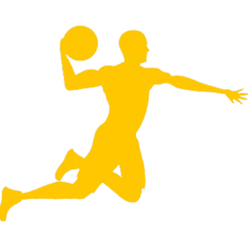

Bandeiras de Defesa

Segurança Pública
Saúde e Bem Estar
Área Social

Esporte
Educação
Infraestrutura Urbana
Cabo Moraes, é uma figura pública, comprometida com o bem-estar da nossa comunidade. Com uma trajetória marcada por valores como integridade, dedicação e serviço público, ele se destaca como um líder incansável na busca por um futuro melhor para todos.
Segurança Pública
Saúde e Bem Estar
Área Social
Esporte
Educação
Infraestrutura Urbana
Acompanhe nossas propostas
Clique aquiO Vereador Cabo Moraes teve requerimentos aprovados que visam melhorar a infraestrutura e a segurança em diversos bairros de nossa cidade. As recentes aprovações contemplam uma série de importantes melhorias. Essas ações demonstram o compromisso do vereador com a melhoria contínua da qualidade de vida em nossa cidade, tais como:
Sinalização Horizontal e Vertical: para garantir uma circulação mais segura e organizada, beneficiando os moradores e motoristas dos Bairros Cannã e Serpro
Recapeamento Asfáltico: para garantir ruas em boas condições e proporcionar um tráfego mais suave e seguro no Bairro Jd. Mondale e Serpro.
Solicitação de Reparos: nas erosões na Vila Santa Luzia, Gameleira II e Vila Rosalina Borges para garantir a segurança dos moradores.
Implementação de Redutores de Velocidade: para aumentar a segurança viária e reduzir o número de acidentes nos Bairros Vila Meneses, Solar dos Ataídes e Pq. Betel.
Implementação do Programa Saúde nos Bairros: nos bairros Serpro, Reserva do Parque e Jardim Floresta para ações educativas, preventivas e diagnósticas.
Implantação de uma base de apoio da GCM: no distrito da Lagoa do Bauzinho, visando reforçar a segurança.
O Vereador Cabo Moraes realizou a solicitação e persistiu na entrega da revitalização da Praça Juarez Alves Fleuri localizada no Bairro SERPRO. A renovação urbana, faz parte de um conjunto de ações promovidas pelo Vereador, que tem se empenhado em atender às demandas dos bairros de sua jurisdição. Iniciativas realizadas neste âmbito, promovem um maior bem-estar à comunidade, segurança, além de propiciar maior lazer a população!
{kind=link}
{kind=link}
{kind=link}
{kind=link}
{kind=link}
{kind=link}
{kind=link}
{kind=link}
{kind=link}